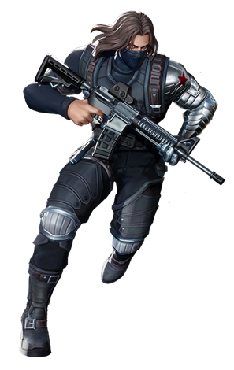

- Nom de Naissance : James Buchanan Barnes
- Nom actuel : Bucky Barnes / The Winter Soldier
- Date de Naissance : 10 Mars 1917 (États-Unis)
- État : En vie
- Apparitions Film/Série :
- Captain America : First Avenger
- Captain America : The Winter Soldier
- Captain America : Civil War
- Avengers Infinity War
- Avengers Endgame
- The Falcon & The Winter Soldier
- Interprete cinématographique : Sebastian STAN
- Créateurs :
- Jack KIRBY
- Joe SIMON
- Première apparition Comic Book : Captain America Comics n°1 en Mars 1941
James est né dans les années 1900 aux États-Unis. Il devient en grandissant sergent et sert la nation au côté de Steve Rogers, son meilleur ami.
Mais lors d'une mission, il va tomber d'un train. Tout le monde pensera qu'il est mort, mais Hydra, une société malveillante, va le recueillir et faire de lui The Winter Soldier. Cette dernière va remplacer son bras casser par la chute de train par un bras en métal. Il deviendra un bras en Vibranium plus tard grâce au Wakanda.
...
...
